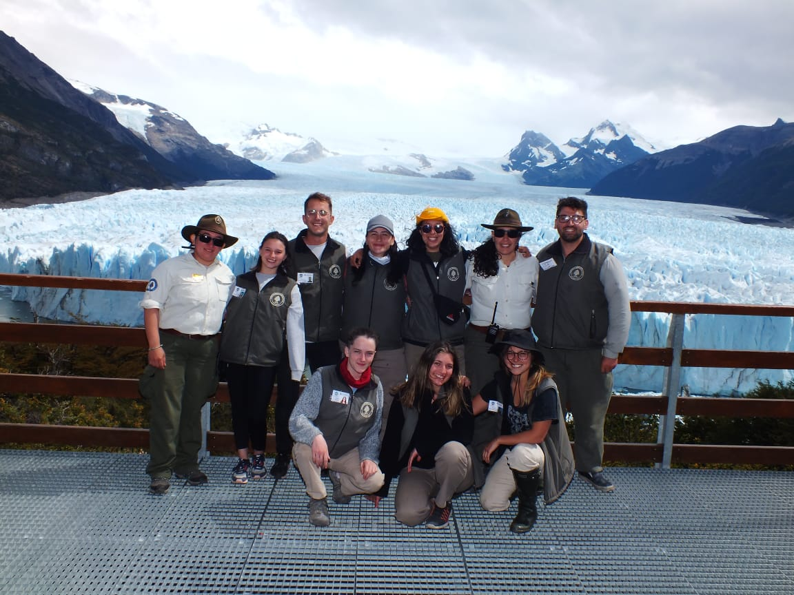

Encuentre aqui toda la informacion sobre los voluntariados en el Parque Nacional Los Glaciares.

Para más información seras redirigido a la pagina de voluntariados del PN Los Glaciares.
El Parque Nacional Los Glaciares consiste de seis seccionales diferentes:
Lago Viedma
Lago Roca
Perito Moreno
Moyano
Rio Guanaco
Mitre
Dentro de estos seccionales tres de ellos ofrecen programas de voluntariados para jovenes entre 16 y 30 años:
Dentro de estos seccionales tres de ellos ofrecen programas de voluntariados para jovenes entre 16 y 30 años:
- Perito Moreno
- Lago Roca
- Lago Viedma
Objetivos:
